k-Day 116｜織女們
今天不急著出發，吃了早餐躺在帳篷裡聽流水聲。和諧之外心底湧上一股衝動，來洗衣服吧。
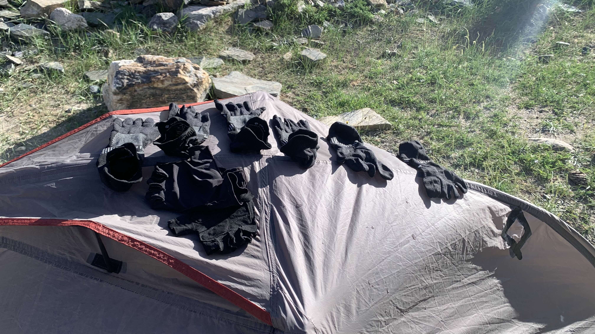
打開裝髒衣服的塑膠袋，惡臭撲鼻。蹲在石頭上搓衣服，覺得有點好笑，跟想像的單車旅行完全不同，短影音推送的都是旅人看到清澈河水跳進去游泳，被陽光照耀的臉龐露出純真笑容的畫面，我第一個念頭卻是洗衣服？
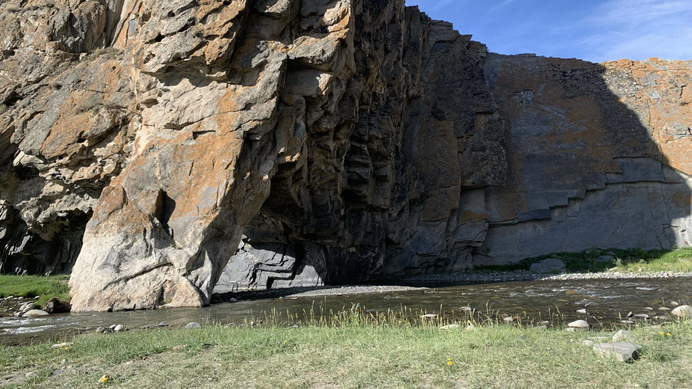
洗完襪子，曬著衣服。斜躺在帳篷洞口看著眼前的岩壁，流水聲還是和昨晚一樣。接近水面的黑色板岩被前方山壁遮住光線，陰影上有水波流動，像銀色小魚一樣的波光往更高處的岩石游動。
想到以前聽過的說法：「做研究的人心裡是不會有觀眾的，策展人心裡才有觀眾。」此刻想來並非如此，我就是觀眾。我並未把自己從名為「觀眾」的群體中分離，而是親眼看著，親身感受一切。沒有更高的台階讓我急著爬上去向眾人宣告什麼，因此躺在各處山壁前的草地上，思考著大家也想知道，但是沒有閒暇顧及的重要的事。
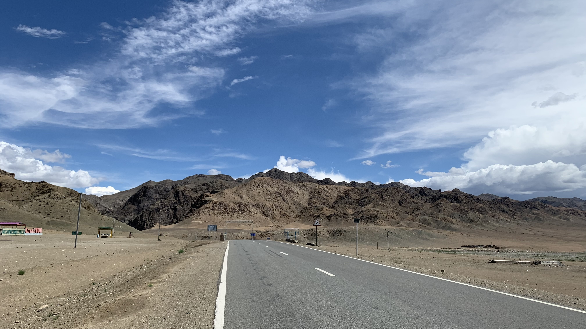
出發後依然沿著河走，山谷彎彎曲曲。
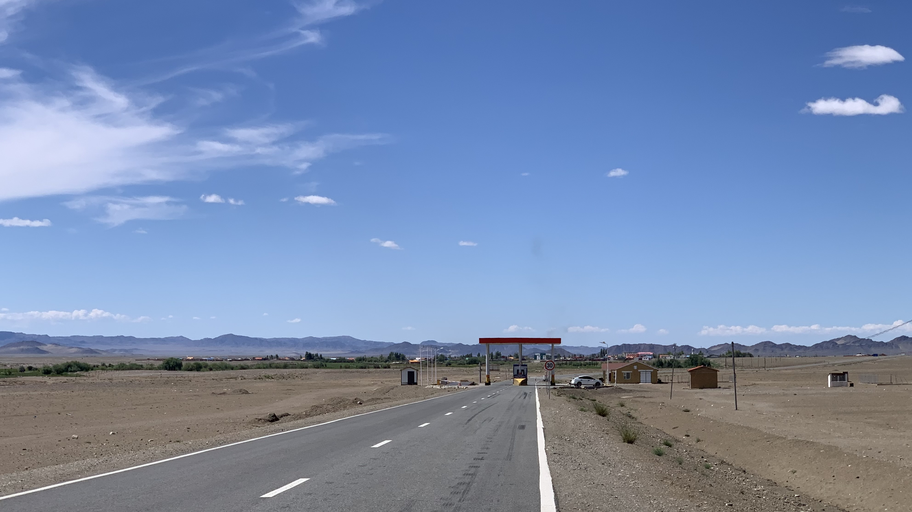
繞過上一個彎，眼前一片開闊。下山了！走了四天終於下山了啊！！！！！
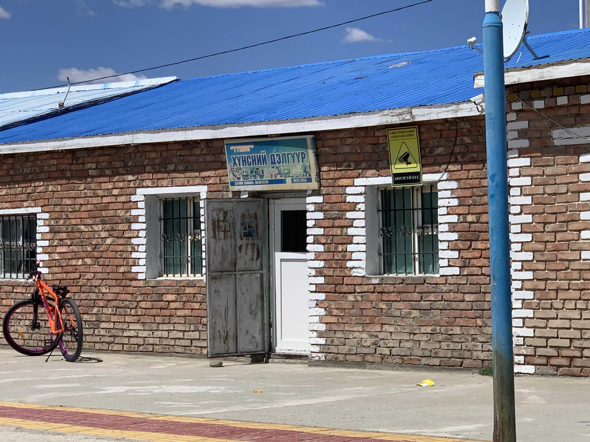
進城後直奔商店街，選定一間停著嶄新橘色自行車的商店走進去。對前來招呼我的小朋友說：「這附近有餐廳嗎？」
很遺憾沒有餐廳，但是小孩到屋內叫上自己的媽媽，說：「在我們家吃飯吧。」
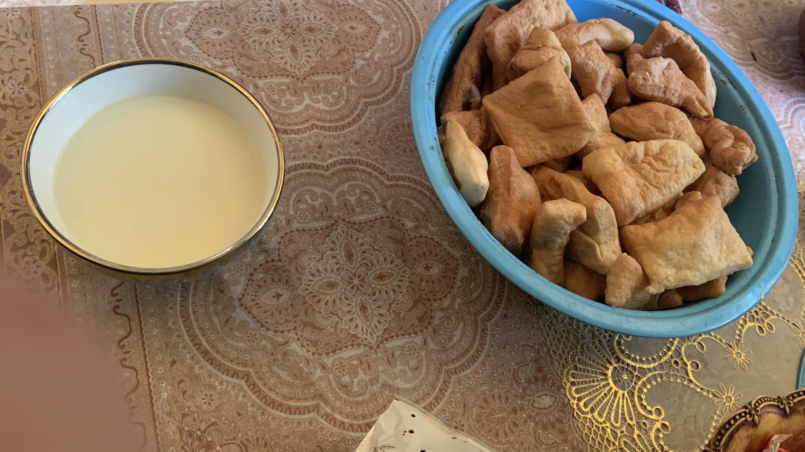
熱奶茶和炸麵團是標配，微鹹的奶茶配上麵團的甜味，離開蒙古前一定要買一包帶著吃。
家裡面有三個小朋友，都是女生。他們也一起吃東西。最小的妹妹有點害羞，偶爾跟在大姐旁邊，偶爾耍脾氣。老二無論是跟我們吃東西，跟妹妹一起看電視，全程都散發一種抽離感。
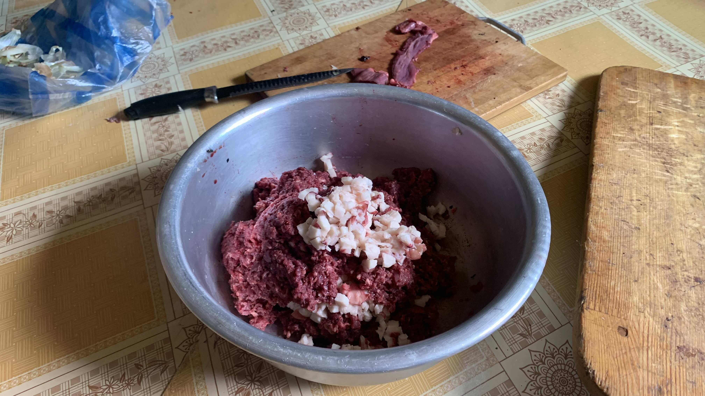
坐在餐桌喝奶茶時，小孩和媽媽開始製作餃子餡。原來這些肉並非來自單一物種，每家的配方不同，一般都是羊肉牛肉的混合。
等待餃子製作的時候，小孩說要帶我參觀他的城市。騎著車去了新建的體育場，還有他姊姊的房子。途中他的好朋友也騎車加入，三個人在鎮上繞來繞去。二十三號還拖著行李，騎得辛苦。看他們用登山車輕鬆地騎在土路上，靈機一動說：「我們換車吧。」
小孩當然很興奮，一口答應就跨上二十三號。天真的孩子，裝滿行李沒有避震的礫石旅行車在這種未鋪裝路段可是很辛苦的。正想著讓他感受旅行的艱辛，他騎著二十三號海放空車的我。
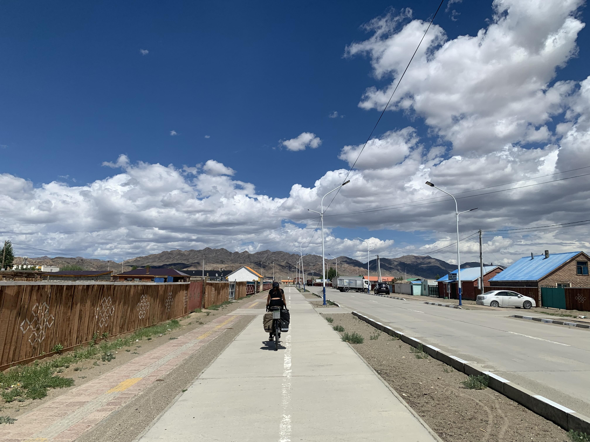
青春啊。
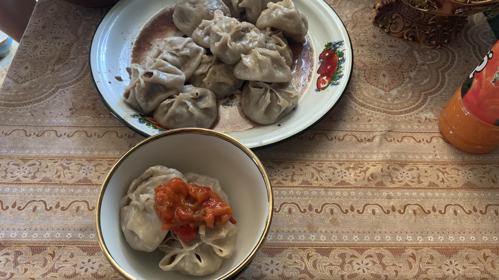
餃子相當好吃，面皮裡包滿肉餡和湯汁。
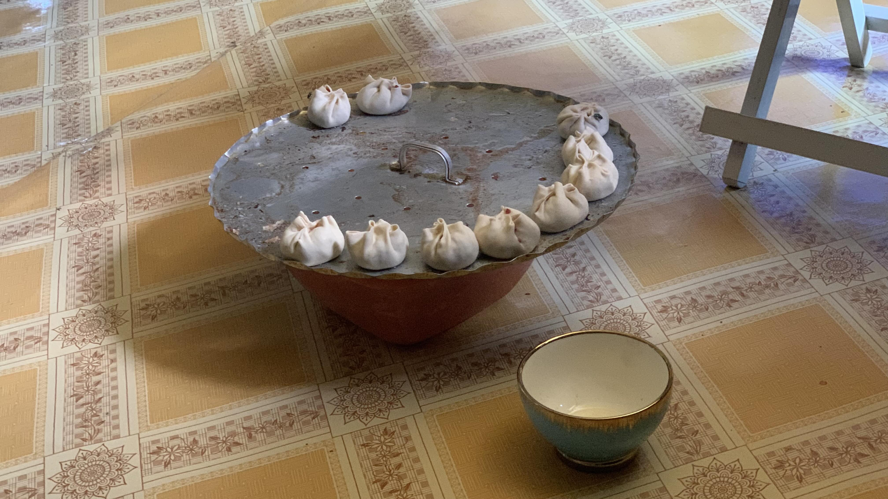
又包了第二輪。小孩跑來和我說今晚住在這吧，離口岸只有150公里了。
說的也是，3號才到期的簽證，我並不想提早離開蒙古。
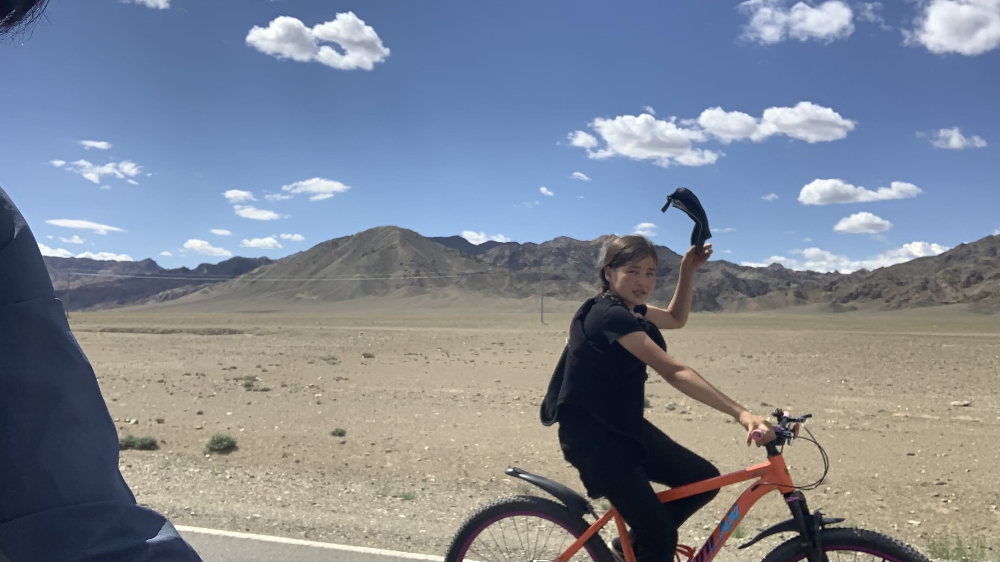
吃了餃子後，小孩要我跟大家一起到早上經過的河邊洗衣洗澡。這是旅程中第一次有人和我一起騎車。看到我要拍照，他舉起棒球帽在空中轉了兩圈。相當帥氣。
這地方早上路過時就覺得漂亮，此時坐在石頭上，背後是一群孩童婦女在河裡洗澡洗衣服。此刻想來，偷衣服的牛郎真是低級的人類。
中午吃餃子聊天時說起自己被打的事，現在已經在河邊傳遍鄉里，聽聞我的經歷後大家紛紛跑來聊天，曾經氣憤的事，現在已經是可以坐在河邊跟大家笑著閒聊的往事了。
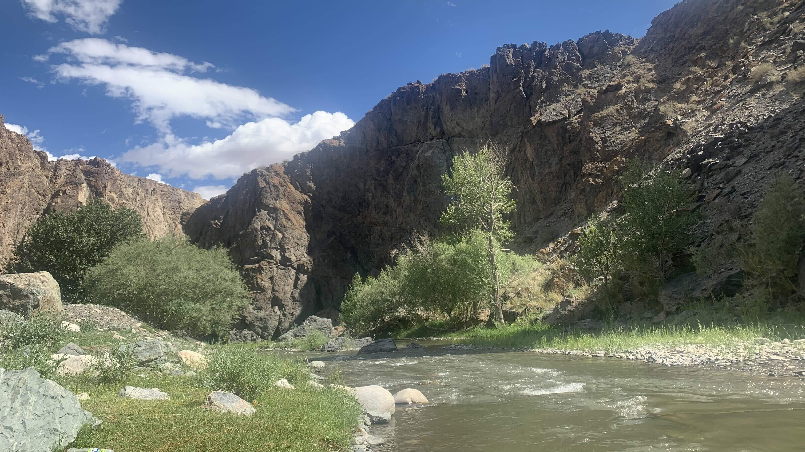
回到商店，已經晚上七點了。在後院搭起帳篷。
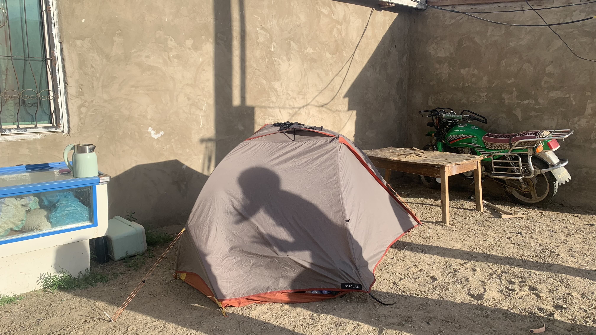
地面頗堅硬，家中最小的妹妹幫我拿來錘子，釘好營釘後，有個生物比我先入住了。
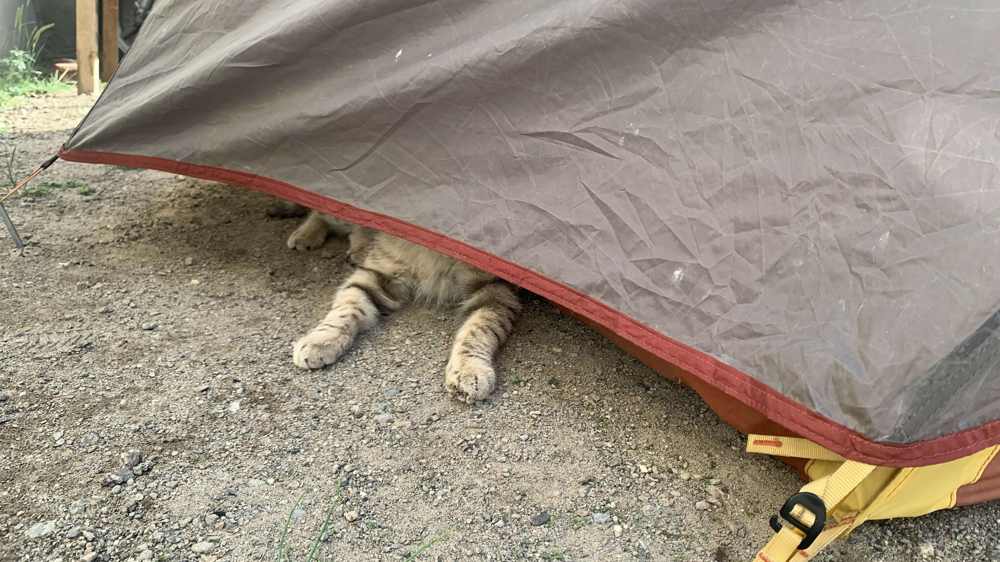
短暫睡了一覺，爬出帳篷後小孩說：「跟我們去吃飯吧。」坐上車來到鎮上的蒙古包。院子裡有排球場，小孩們都在打排球，裡面還有位專業選手。
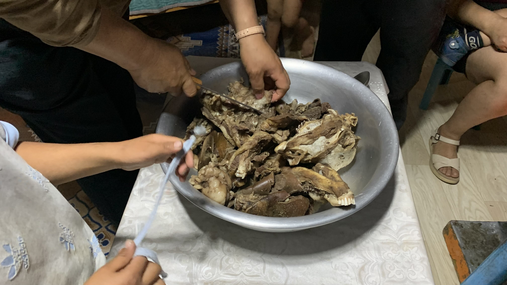
最小的妹妹拉著我的手走進蒙古包，一鍋煮滾的羊躺在爐子上。把羊頭和身體的不知名部位裝進盆裡，小孩們都喜歡吃舌頭。
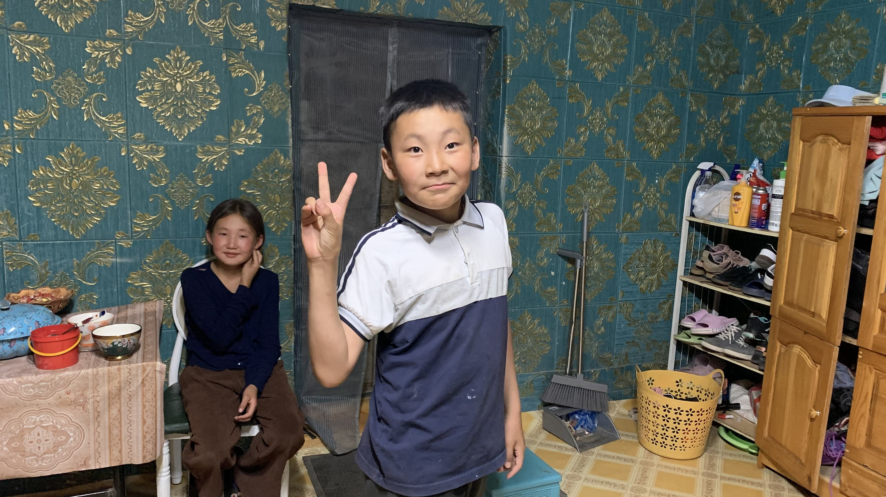
此處是老闆爸媽的家，現在是由妹妹一家住在這裡。他指了家庭照給我看，裡面每個人都長得相當體面。這位小男生應該是妹妹的小孩，聽不下我的蒙語發音，很認真的拆開所有音節教我說話。他說一句，我說一句，想必我模仿十分成功，所有人聽到我的發音都瞪大眼睛驚呼一聲，隨後繼續低頭吃羊。後面的妹妹是老二，我看著他的時候很像在看自己，全天下第二個孩子都共享了類似的人生嗎。
吃了羊又坐上車回到商店，老闆讓我把帳篷收起來，晚上睡在家裡。鋪上睡墊，正要拉出睡袋，老闆說不需要這種東西，又拿出棉被鋪上。
收好行李走到前面的店舖，幫老闆拍了張照片。老闆是一名氣場相當強的女性，下午有一名喝醉酒的男性不斷來回騷擾，剛剛也來了一個明顯同樣喝醉酒的男性，期間對著我講些小孩明顯不適合聽到的幹話，他全程都相當淡定。
店舖開的很晚，我先回到後面的客廳跟小朋友們躺在睡墊上。一整天看著母女們的家常，一家人的感情真的非常好，希望他們一家人平安幸福。
今日花費：水＋糧食 196+415元